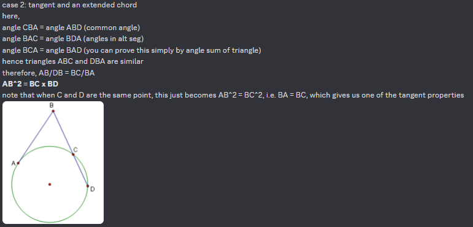
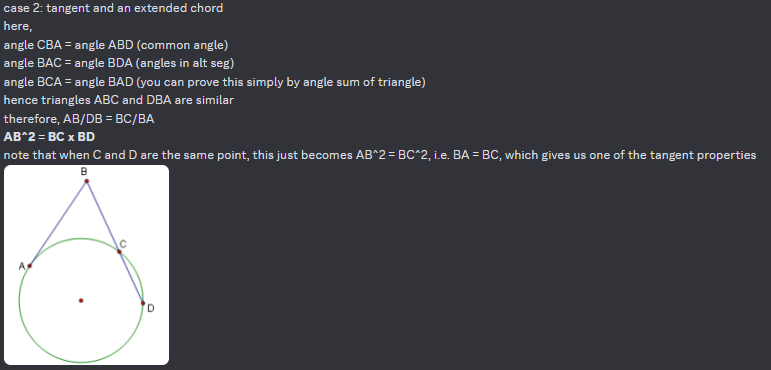

Yes, Timmy, points can have a value.
If anyone's studied theorems relating to circles, then you know how much of a pain it is to remember everything.
The power of a point (Π(P)), (not to be confused with PowerPoint, the software with which millions have demonstrated blatant idiocy and laziness regarding their editing skills, especially with generative AI), refers to the "relative distance of a point from a circle".
This is Wikipedia's way of saying it. However, I hate it so much, so I'll make a better one with an actual expression.
Π(P) is simply (distance to centre)² - (radius)². There, much better. The value will vary with our definition:
1. The point is on the circumference. In this case, Π(P) = 0. (duh)
2. The point is outside the circumference of circle. In this case, Π(P) is larger than 0.
3. The point is inside the circle. In this case, Π(P) is smaller than 0.
Although complicated, there are many examples where the power of a point can come into use. I'll show 3 of these use cases which can help derive properties of power:
 
